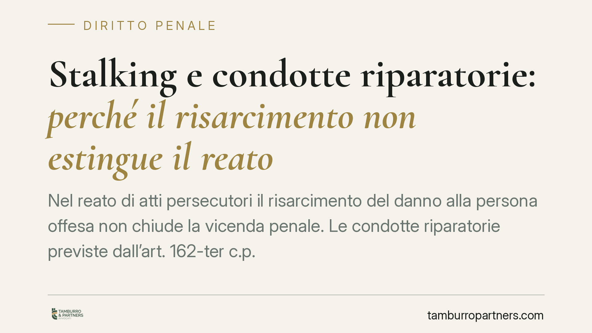

Stalking e condotte riparatorie: perché il risarcimento non estingue il reato
Nel reato di atti persecutori il risarcimento del danno alla persona offesa non chiude la vicenda penale. Le condotte riparatorie previste dall'art. 162-ter c.p. non operano per lo stalking, per effetto del suo regime di procedibilità e della tutela rafforzata riconosciuta alle vittime di violenza di genere. Un profilo tecnico che imputati e persone offese devono conoscere per orientare scelte processuali consapevoli.

Il punto di partenza
Una domanda ricorrente nei procedimenti per atti persecutori (art. 612-bis c.p.) è se il pagamento del risarcimento del danno alla persona offesa possa estinguere il reato. La risposta, allo stato della normativa, è negativa. Vediamo perché, senza scorciatoie e ancorando ogni affermazione alle fonti.
Inquadramento normativo
L'art. 162-ter c.p. disciplina l'estinzione del reato per condotte riparatorie. La norma consente al giudice di dichiarare estinto il reato quando l'imputato, entro un termine, ha riparato interamente il danno cagionato mediante restituzioni o risarcimento ed ha eliminato le conseguenze dannose o pericolose della condotta.
Questo istituto, però, non ha portata generale. Opera nei reati procedibili a querela soggetta a remissione. È questo il perno tecnico: le condotte riparatorie sono pensate per illeciti in cui l'ordinamento rimette alla persona offesa la valutazione sull'interesse alla prosecuzione del processo.
Lo stalking si colloca fuori da questo perimetro. Il regime di procedibilità dell'art. 612-bis c.p. è più rigido: la querela, in via generale, è irrevocabile nelle ipotesi più gravi, e il reato è procedibile d'ufficio in una serie di casi tipizzati (tra cui la connessione con altro delitto procedibile d'ufficio o la commissione a danno di minori e persone con disabilità). Questo assetto è frutto degli interventi normativi in materia di violenza di genere, in particolare la L. 69/2019 (cosiddetto "Codice Rosso") e le modifiche successive [riferimenti da verificare rispetto al testo vigente prima di ogni decisione operativa].
La ratio è coerente con gli obblighi internazionali assunti dall'Italia con la ratifica della Convenzione di Istanbul (L. 77/2013), che impone una protezione rafforzata alle vittime di violenza contro le donne e di violenza domestica, riducendo gli spazi di definizione "transattiva" del conflitto penale.
Dove la querela non è liberamente revocabile e dove opera la procedibilità d'ufficio, l'istituto delle condotte riparatorie perde il presupposto su cui poggia. Il risarcimento resta rilevante, ma non produce l'effetto estintivo dell'art. 162-ter c.p.
Cosa cambia nella pratica
Occorre distinguere tre profili spesso confusi.
- Condotte riparatorie (art. 162-ter c.p.). Estinguono il reato, ma solo nei reati procedibili a querela remissibile. Nello stalking, di regola, non operano.
- Remissione di querela. Presuppone che la querela sia revocabile. Per lo stalking, nelle ipotesi in cui la querela è irrevocabile o il reato è procedibile d'ufficio, la remissione non produce effetti estintivi.
- Attenuante del risarcimento (art. 62 n. 6 c.p.). Qui il discorso cambia. Il risarcimento integrale del danno, prima del giudizio, può integrare la circostanza attenuante comune. Non estingue il reato, ma incide sulla determinazione della pena. È il vero terreno su cui il pagamento del danno conserva rilievo penale.
Per l'imputato significa che una strategia costruita solo sul risarcimento non chiude il procedimento. Per la persona offesa significa che l'eventuale accettazione di un risarcimento non equivale a rinunciare alla tutela penale né obbliga a "perdonare" sul piano processuale.
Una nota sulle fonti giurisprudenziali
Su questi temi circolano pronunce citate in modo impreciso o non reperibili nei repertori ufficiali. Prima di fondare una scelta processuale su una sentenza, verificarne numero, anno e testo integrale nelle banche dati ufficiali. Su una materia che tocca la libertà personale e la sicurezza delle vittime, l'approssimazione non è ammessa.
Cosa fare in concreto
- Verificate il regime di procedibilità del caso concreto: querela irrevocabile, querela remissibile o procedibilità d'ufficio determinano strategie diverse.
- Non impostate la difesa solo sul risarcimento: valutate se e come esso possa rilevare come attenuante ex art. 62 n. 6 c.p., non come causa estintiva.
- Per la persona offesa, distinguete i piani: l'accettazione del risarcimento civile non implica automaticamente scelte sul piano penale.
- Documentate tempi e modalità dell'eventuale risarcimento, perché la loro collocazione temporale incide sulla valutazione del giudice.
- Consigliamo di aggiornare ogni valutazione al testo vigente delle norme e agli orientamenti di legittimità verificati, dato il carattere in evoluzione della disciplina sulla violenza di genere.
Disclaimer
Contributo informativo a cura di Tamburro & Partners - Avv. Giuseppe Tamburro. Non costituisce parere legale.
Ogni condominio ha una storia a sé.
Se gestisci un'amministrazione e vuoi un confronto su una specifica questione condominiale, scrivi allo studio. Ti rispondiamo entro un giorno lavorativo.